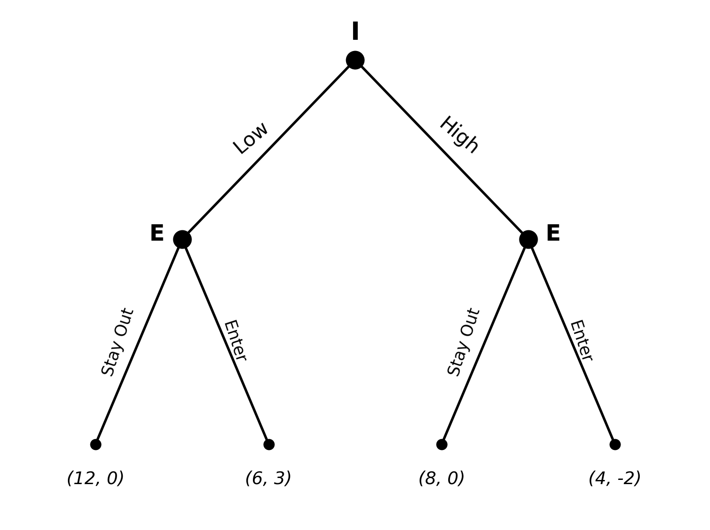

Part 4: Game Theory Practice Problem Solutions
Econ 502: Advanced Microeconomics
Problem 1: Battle of the Sexes (Mixed Strategies)
Part (a): Pure equilibria
- \((O, O)\): A’s BR to \(O\) is \(O\) (\(3 > 0\)); B’s BR to \(O\) is \(O\) (\(1 > 0\)). \(\checkmark\) NE.
- \((F, F)\): by symmetry. \(\checkmark\) NE.
- \((O, F)\) and \((F, O)\): each player wants to switch.
A prefers \((O, O)\) (gets 3 vs 1); B prefers \((F, F)\) (gets 3 vs 1). The game is a “coordination game with conflict” because both players want to coordinate on some equilibrium (avoid the \((0, 0)\) off-diagonal cells), but they disagree about which one.
Part (b): Mixed equilibrium
Let \(p = \Pr(\text{A plays O})\) and \(q = \Pr(\text{B plays O})\).
A is indifferent between O and F: \[EU_A(O) = 3q + 0(1-q) = 3q\] \[EU_A(F) = 0 \cdot q + 1(1-q) = 1 - q\] \[3q = 1 - q \;\;\Longrightarrow\;\; q^{*} = \tfrac{1}{4}\]
B is indifferent: \[EU_B(O) = 1 \cdot p + 0(1-p) = p\] \[EU_B(F) = 0 \cdot p + 3(1-p) = 3 - 3p\] \[p = 3 - 3p \;\;\Longrightarrow\;\; p^{*} = \tfrac{3}{4}\]
\[\boxed{p^{*} = 3/4, \quad q^{*} = 1/4}\]
A plays her preferred activity (Opera) with high probability; B plays his preferred activity (Football) with high probability. Each player puts higher weight on their own favorite - a striking and counterintuitive feature of the mixed equilibrium. (Intuition: each player must mix in a way that makes the opponent indifferent. To make A indifferent between Opera and Football, B has to choose Opera relatively rarely.)
Part (c): Expected payoffs
At the mixed NE, A’s expected payoff is \(3 q^{*} = 3 \cdot 1/4 = 3/4\). By symmetry, B’s expected payoff is also \(3/4\).
Compare to the pure equilibria, where the worse-off player still gets 1. So both players prefer either pure equilibrium to the mixed equilibrium, even the one that favors their partner.
The reason is coordination failure at the mixed NE. The probability of miscoordination (one chooses O, the other F) is
\[p^{*} (1 - q^{*}) + (1 - p^{*}) q^{*} = \tfrac{3}{4} \cdot \tfrac{3}{4} + \tfrac{1}{4} \cdot \tfrac{1}{4} = \tfrac{10}{16} = \tfrac{5}{8}\]
So 62.5% of the time the players miss each other entirely (payoff 0). Players prefer any coordinated equilibrium - even one that favors their partner - to the noisy mixing.
Part (d): Commitment by A
If A can publicly and credibly commit to Opera before B chooses, B’s best response is Opera (1 > 0). The outcome is \((O, O)\) with payoffs \((3, 1)\). A captures her preferred equilibrium.
This illustrates the value of commitment in coordination games with conflict: when there are multiple equilibria, the player who can commit first selects the equilibrium that favors them. Schelling-style commitment devices (announcements, public schedules, contracts) help break ties in the proposer’s favor.
Problem 2: Stag Hunt
Part (a): Pure equilibria, payoff vs. risk dominance
- \((S, S)\): A’s BR to S is S (\(5 > 4\)); B symmetric. NE.
- \((H, H)\): A’s BR to H is H (\(4 > 0\)); B symmetric. NE.
- \((S, H)\), \((H, S)\): not NE.
Both equilibria are Pareto-rankable: \((S, S)\) gives \((5, 5)\) and \((H, H)\) gives \((4, 4)\), so \((S, S)\) is payoff-dominant.
For risk dominance, suppose each player believes the opponent randomizes 50-50:
\[EU(S) = 0.5(5) + 0.5(0) = 2.5, \qquad EU(H) = 0.5(4) + 0.5(4) = 4\]
Each player prefers Hare against an uninformative belief. So \((H, H)\) is risk-dominant.
The two equilibrium-selection criteria therefore disagree: payoff dominance favors cooperation; risk dominance favors safety.
Part (b): Mixed equilibrium
Let \(\pi\) denote the probability of Stag (symmetric mixing). For Player A to be indifferent:
\[5\pi + 0(1-\pi) = 4\pi + 4(1-\pi) \;\;\Longrightarrow\;\; 5\pi = 4 \;\;\Longrightarrow\;\; \pi^{*} = 4/5\]
Each plays Stag with probability \(4/5\).
Part (c): When does A choose Stag?
Given belief \(\pi\) on B’s Stag,
\[EU_A(S) = 5\pi + 0(1-\pi) = 5\pi, \qquad EU_A(H) = 4\pi + 4(1-\pi) = 4\]
A plays Stag iff \(5\pi \geq 4\), i.e., \(\pi \geq 4/5\).
Coordination failure. Even though both players strictly prefer \((S, S)\) to \((H, H)\), each requires very high confidence (\(\pi \geq 4/5\)) that the opponent will also choose Stag. With anything less than 80% confidence, the safe Hare is the best response. Mutual confidence is fragile, and the inferior \((H, H)\) equilibrium can be a stable outcome - a classical coordination failure.
Part (d): Real-world example
(Any one of these is a valid answer.)
- Climate treaties. All countries gain if everyone abates emissions (Stag). A country whose partners renege loses competitiveness while still paying abatement costs (the “Stag with everyone defecting” payoff). Lacking high mutual trust, all default to weaker pledges (Hare).
- Vaccinations. Herd immunity is a public good of cooperation. If a critical mass vaccinates, everyone benefits (Stag). If trust in widespread participation collapses, individuals weigh personal cost-benefit and may opt out (Hare).
- Bank runs. Depositors keep money in if confident others will too (Stag). Once doubts emerge, each rushes to withdraw first to avoid being left holding nothing (Hare). The bank fails not from fundamentals but from the self-fulfilling shift to the risk-dominant equilibrium.
Problem 3: Entry Deterrence
Part (a): Game tree
Payoffs at the terminal nodes are listed as \((\pi_I, \pi_E)\).
Part (b): Backward induction and SPE
Stage 2 - entrant’s choice given \(k\):
- If \(k = \text{Low}\): E compares Stay Out (\(0\)) vs Enter (\(3\)). E enters. I gets \(6\).
- If \(k = \text{High}\): E compares Stay Out (\(0\)) vs Enter (\(-2\)). E stays out. I gets \(8\).
Stage 1 - incumbent’s choice: I gets \(6\) if Low, \(8\) if High. I picks High.
\[\boxed{\text{SPE: I plays High; E plays ``Enter if Low, Stay Out if High''. Outcome: (High, Stay Out), payoffs } (8, 0).}\]
Part (c): No commitment
If capacity is reversible, treat the game as if E moves first and I responds:
- If E enters: I picks \(\max(6, 4) = 6 \to\) Low. E gets \(3\).
- If E stays out: I picks \(\max(12, 8) = 12 \to\) Low. E gets \(0\).
E compares \(3\) (enter) vs \(0\) (stay out) and enters. I plays Low and gets \(6\).
So commitment yields I = 8, no commitment yields I = 6. Commitment benefits I by \(\$2\).
The reason: with capacity reversible, post-entry I would prefer the cheaper Low capacity (profit 6 > 4), so the threat of “tough” post-entry behavior is empty. The entrant correctly anticipates accommodating behavior and enters. By committing to High capacity ex ante, the incumbent makes the aggressive post-entry stance an actual choice - the threat becomes credible, and entry is deterred.
Part (d): Non-credible threat
A bare verbal threat (“I will compete aggressively if you enter”) is not credible because, post-entry, the incumbent’s best response in this game is to switch to Low capacity (6 > 4). The entrant would correctly ignore the threat and enter.
Building capacity ex ante converts a non-credible threat into a credible one by changing the incumbent’s actual post-entry payoffs (sunk capacity makes producing a lot the optimal response). This is the Schelling insight: commitment devices are valuable because they tie one’s hands. Words alone are cheap; sunk investments are not.
Problem 4: Ultimatum Bargaining
Part (a): Player 2’s response
- \(s_2 > 0\): accepting yields \(s_2 > 0\), rejecting yields \(0\). Accept.
- \(s_2 = 0\): indifferent; the convention is to accept.
So Player 2 accepts any offer \(s_2 \geq 0\).
Part (b): Player 1’s offer
Player 1 wants to keep as much as possible. Since any \(s_2 \geq 0\) is accepted, Player 1 offers \(s_2 = 0\) and keeps \(s_1 = 10\).
\[\boxed{\text{SPE: } (s_1, s_2) = (10, 0), \text{ payoffs } (10, 0)}\]
Part (c): Empirical anomaly
Lab subjects routinely reject offers below ~30% of the pie, and proposers often offer close to 50–50. This contradicts the rational, self-interested SPE prediction in two ways:
- Player 2 should accept any positive amount.
- Player 1 should offer close to zero.
One modification that rationalizes the data: inequity aversion (Fehr & Schmidt, 1999). Suppose Player 2’s utility includes a penalty for unfair distributions:
\[U_2(s_1, s_2) = s_2 - \alpha \max(s_1 - s_2, 0) - \beta \max(s_2 - s_1, 0)\]
where \(\alpha > \beta \geq 0\) captures sensitivity to disadvantageous inequality. With \(\alpha\) large enough, Player 2 prefers to reject lopsided offers (suffering \(0\) rather than tolerating a humiliating allocation). Anticipating this, Player 1 offers a more equal split.
Other modifications: reciprocity / intentions-based preferences (Rabin), social-image concerns, anger / negative emotions toward unkind proposers.
Part (d): Two-round bargaining
Solve by backward induction.
Round 2. The pie is \(\delta \cdot 10\). Player 2 makes the offer. Player 1 will accept any non-negative amount, so Player 2 offers Player 1 = 0 and keeps \(10\delta\). Round-2 payoffs: \((0, 10\delta)\).
Round 1. Player 2’s continuation value of rejecting is \(10\delta\). So Player 2 accepts iff \(s_2 \geq 10\delta\).
Player 1 offers exactly \(s_2 = 10\delta\) (and keeps \(s_1 = 10 - 10\delta = 10(1 - \delta)\)). Player 2 accepts.
\[\boxed{\text{SPE round-1 offer: } s_1 = 10(1-\delta), \; s_2 = 10\delta. \text{ Payoffs: } (10(1-\delta), 10\delta).}\]
Comparative statics:
- As \(\delta \to 1\) (no shrinkage / Player 2 very patient): equal split.
- As \(\delta \to 0\) (Player 2 very impatient): Player 1 captures everything, just like the one-shot ultimatum game.
Player 2’s bargaining power comes entirely from the credible threat to reject and counter-offer. The lower \(\delta\) is, the weaker that threat - and the more Player 1 can extract.
Problem 5: Repeated Prisoner’s Dilemma
Part (a): One-shot equilibrium
For each player, Defect strictly dominates Cooperate:
- If opponent C: own C → 4, own D → 5. D better.
- If opponent D: own C → 0, own D → 1. D better.
Each player’s dominant strategy is D, so the unique Nash equilibrium is \((D, D)\) with payoffs \((1, 1)\). (Compare to the cooperative outcome \((4, 4)\) - the central PD inefficiency.)
Part (b): Critical discount factor for grim trigger
(i) PV of always cooperating: \[V_C = 4 + 4\delta + 4\delta^2 + \cdots = \frac{4}{1-\delta}\]
(ii) PV of deviating today, then triggering forever: \[V_D = 5 + \delta(1) + \delta^2(1) + \cdots = 5 + \frac{\delta}{1-\delta}\]
Cooperation is sustainable as a subgame-perfect equilibrium iff \(V_C \geq V_D\):
\[\frac{4}{1-\delta} \geq 5 + \frac{\delta}{1-\delta} \;\;\Longleftrightarrow\;\; \frac{4 - \delta}{1-\delta} \geq 5 \;\;\Longleftrightarrow\;\; 4 - \delta \geq 5 - 5\delta\]
\[\Longleftrightarrow\;\; 4\delta \geq 1 \;\;\Longleftrightarrow\;\; \boxed{\delta \geq \delta^{*} = 1/4}\]